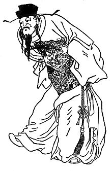
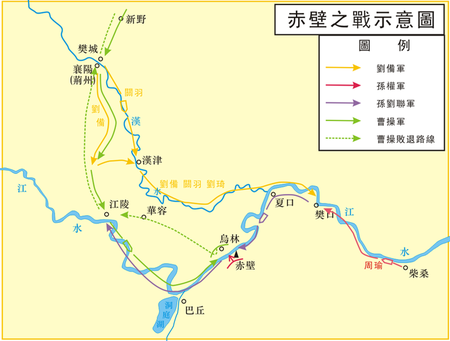

曹操:治世之能臣，亂世之奸雄

生平:
東漢永壽元年（155年），曹操出生於沛國譙縣（今安徽亳州）的一個宦官家族，養祖父是宦官曹騰，歷侍四代天子，漢桓帝時封為費亭侯。父親曹嵩是曹騰養子，漢靈帝時官至太尉。曹操少年時機警過人，通權謀機變，十歲時曾經在家鄉擊退鱷魚，但行為放蕩不羈。曹操的叔父曹熾數次在曹嵩面前批評曹操，曹操聽到後心生不滿。有次在曹熾經過時，曹操突然裝作中風的樣子，曹熾急忙去找曹嵩，曹嵩趕來時，曹操卻和平常一樣，說自己原本就沒有病，因不受曹熾喜愛，所以曹熾就亂說謊。所以之後曹熾再告曹操的狀時，曹嵩都不相信他的話，曹操也更加肆無忌憚。曹操年輕時是名諸生[15]，熹平三年（174年），二十歲的曹操察舉孝廉成為郎官，不久司馬防(曹魏後期的權臣和西晉奠基人司馬懿的父親)推薦曹操為洛陽北部尉，但曹操想擔任洛陽令，不過負責人事的選部尚書梁鵠並沒有同意。曹操上任洛陽北部尉後，在官署門口放置五色棒，規定犯法者處死。180年，曹操又被朝廷徵召，任命為議郎。中平元年（184年）二月，太平道首領張角聚眾起義，黃巾之亂爆發，朝廷任命曹操為騎都尉，前往潁川郡鎮壓叛亂。由於鎮壓黃巾軍有功，升任濟南相，任職後罷免濟南貪污縣令8名，並且嚴令禁止當時盛行的宗教迷信。初平三年（192年），曹操駐軍頓丘，黑山賊於毒等趁機攻擊東武陽，曹操率軍直向於毒的本營西山，於毒得到消息，解除對東武陽的進攻。曹操趁勝進抵內黃，大破眭固及南匈奴單于於夫羅等，東郡遂告安定。
文學成就:
曹操詩歌在表現形式上往往有所創新，如「薤露行」、「蒿里行」，「短歌行」古辭都是雜言，各曲僅為四句，曹操則改用五言來寫，各十六句。五言詩以外，又長於四言詩。蒿里行》原是雜言，曹操卻以五言重寫，非常成功。四言詩方面，本自《詩經》之後已見衰落，少有佳作，但曹操卻繼承《國風》和《小雅》的傳統，反映現實，抒發情感。例如：《短歌行》、《步出夏門行》等均是四言詩之佳作，使四言詩重生而再放異彩。此外，曹操還有不少其他文章傳世，例如《請追增郭嘉封邑表》、《讓縣自明本志令》、《與王修書》、《祀故太尉橋玄文》等，文字質樸，感情流露，流暢率真
赤壁之戰:
赤壁之戰係東漢末年曹操對孫權同劉備聯盟打嘅一場仗。曹操消滅咗袁紹勢力之後，想進一步統一全國，就親率20萬大軍到長江邊，孫權同劉備聯盟，響赤壁打咗一場大仗，雖然孫權同劉備少曹操好多兵，但係佢哋都贏咗。之後曹操力量銳減，無力南下，唯有睇住北方。
